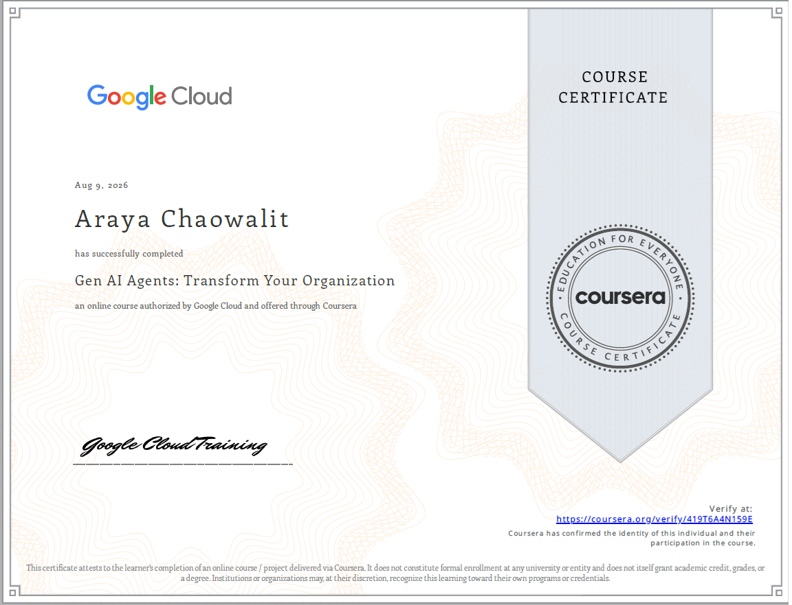
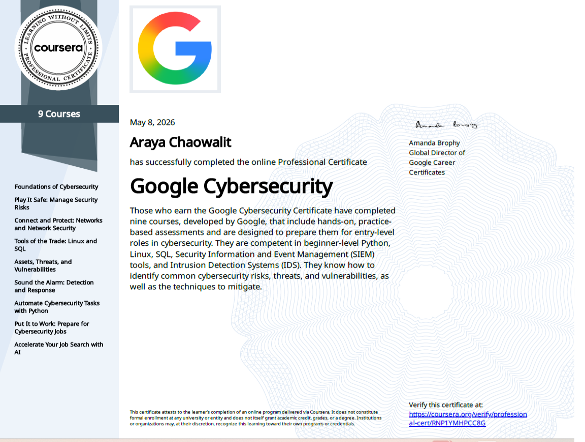
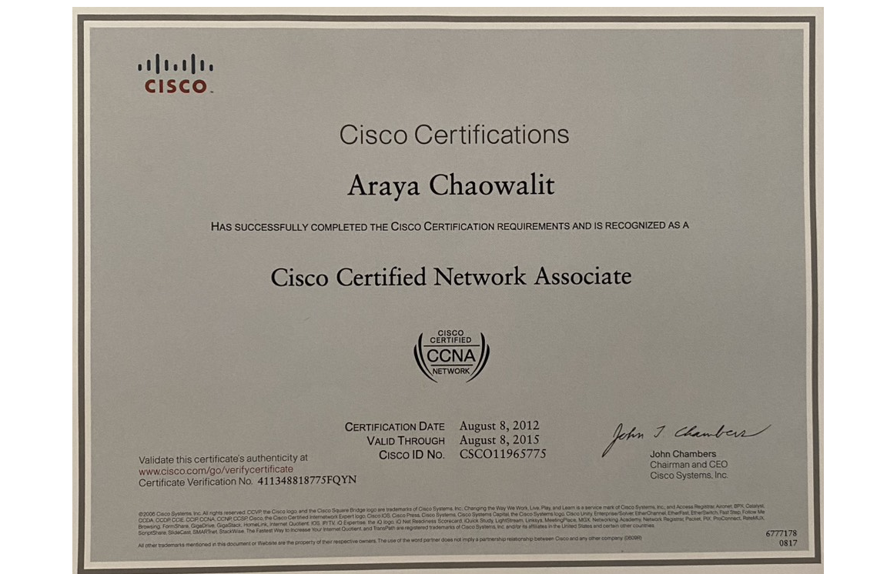
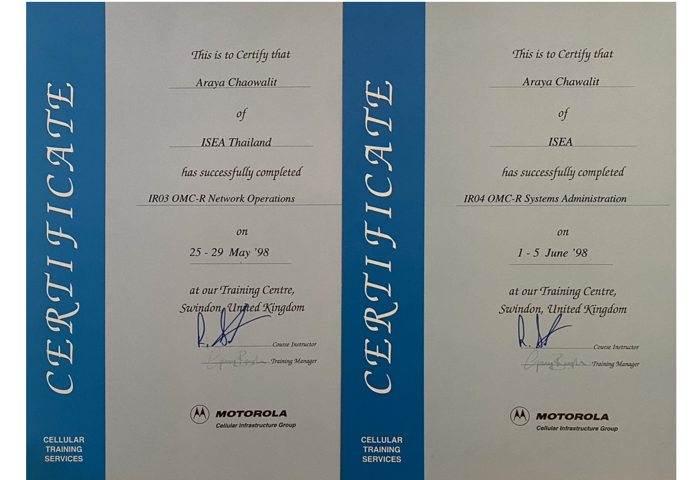

FULL-STACK AI · RAG
DermaGlow AI Store
AI-powered skincare assistant combining semantic product retrieval, conversation memory, Gemini and a FastAPI backend.
APPLIED AI ENGINEER · DATA SCIENTIST
I combine hands-on AI development with more than 15 years of enterprise technology experience across telecom, data analytics and operational systems. I design AI solutions that connect technical capability with business value, risk management and user adoption.
Applied AI Engineer · Data Scientist
AI APPLICATION STACK
SELECTED WORK
Selected AI projects demonstrating practical application development, Generative AI and data engineering.
FULL-STACK AI · RAG
AI-powered skincare assistant combining semantic product retrieval, conversation memory, Gemini and a FastAPI backend.
NLP MODEL FINE-TUNING
Thai–English text classification using multilingual DistilBERT to identify potential off-platform communication and policy violations. The project demonstrates Transformer fine-tuning, validation-based threshold optimization and responsible evaluation under extreme class imbalance.
CAPABILITIES
Building practical AI systems by combining machine learning, Generative AI, data engineering and application development.
LLM application development, prompt engineering, Retrieval-Augmented Generation and AI assistants.
Supervised and unsupervised learning, predictive modeling, anomaly detection and model evaluation.
Multilingual text classification, transformer models and conversational AI applications.
Data analysis, feature engineering, statistical analysis, visualization and large-scale dataset processing.
Connecting AI models with web applications, APIs and user-facing business systems.
Developing, testing and deploying AI applications using modern engineering workflows.
ABOUT
I am an Applied AI Engineer and Data Scientist focused on turning AI technologies into practical, usable systems.
My work spans Generative AI, NLP, time-series forecasting, anomaly detection and behavioral analytics. I develop end-to-end solutions—from data preparation and model development to APIs, application integration and business-facing tools.
Earlier in my career, I worked with global telecommunications companies, including Motorola, Huawei and Nokia Siemens Networks. My responsibilities covered network systems, OSS integration, performance monitoring, troubleshooting and the reliability of mission-critical telecom environments. This experience built a strong foundation in systems thinking, operational reliability and solving complex technical problems.
My academic background includes graduate studies in Computer Engineering at the University of Victoria, where I conducted industry-partnered research on machine learning and behavioral analytics for large-scale building automation networks.
Today, I combine my AI, research and telecommunications experience to turn complex business challenges into practical, reliable and measurable AI solutions.
PROFESSIONAL DEVELOPMENT
Continuous professional development across artificial intelligence, data science, cybersecurity and enterprise telecommunications technologies.

Coursera
Generative AI · AI Agents · Business AI Adoption

Google · Coursera
Cybersecurity · Risk Management · Security Operations

Cisco
Networking · Routing · Switching · TCP/IP

Motorola Traninig Center
Performance Monitoring and KPI Analysis · Fault and Alarm Management · System and Database Administration · Network Management
CONTACT
Interested in Generative AI, Machine Learning, Data Science or AI-enabled product development.
Bangkok, Thailand